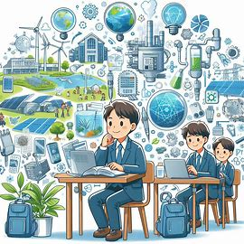

基盤コースってどんなところ？
基盤コースは、1年次を共通科目で過ごした後、2年次から「エネルギー機械」「プロダクトデザイン」「エレクトロニクス」「知能情報」の4つのコースに分かれて専門知識・技術を学ぶコースです。３年次から専門知識に加え、幅広い分野を「応用専門分野」科目として提供し、学生の興味関心を広げ、将来を見据え、職業に対する意識を醸成します。ICT及びSDGs指向の「専門共通科目」は全コースで共通して学習し、社会を支える技術者、社会人としての基本的素養と人間性を養います。
基盤コースで得られること
- ICT（情報通信技術）の基礎から応用までを習得: AI、IoT、VR、情報セキュリティなどの先端技術を含め、情報通信分野の基盤技術を実践的に学び、社会のデジタル変革を牽引する力を養います。
- SDGs（持続可能な開発目標）指向の素養: 人権、防災、環境、資源、リサイクルといった現代社会の重要な課題について学習し、社会を支える技術者としての基本的素養と人間性を育みます。
- 高度な専門性と課題解決能力: 学年を通じて数理・データサイエンス・AIの教育が推進され、各分野の基礎的・応用的な研究を通じて、複雑な問題を論理的に解決する力が身につきます。
- 実践的な学びと多様な視点: 企業や大学との共同での質の高い実践的な教育や、他分野の知見を獲得する機会を通じて、学生は多角的な視点や個性を磨き、社会で活躍できる実践力を養います。

大阪公立大学工業高等専門学校の基盤コースでは、ICTとSDGsを軸に、情報通信技術の基礎・応用、社会貢献への素養、高度な課題解決能力、そして実践的な多角的視点を習得し、未来社会を牽引する技術者としての総合力を養います。
学習内容（例）
- プログラミング基礎と応用
- 情報通信ネットワークの基礎
- データサイエンスとAI入門
- 数理科学と物理の基礎
- 組込みシステムとIoT技術
これらの内容は、君たちの興味や進度に合わせて柔軟に調整されます。
もっと詳しく知りたい？
基盤コースについて、さらに詳しい情報はこちらからご覧いただけます。